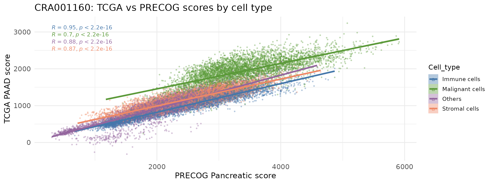
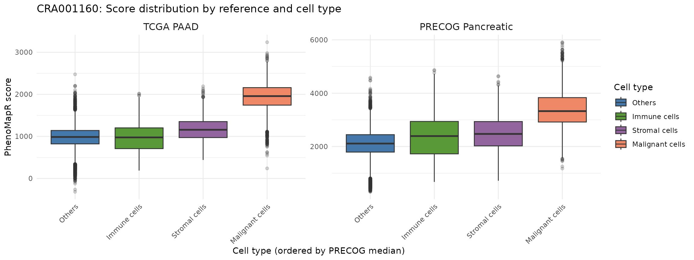
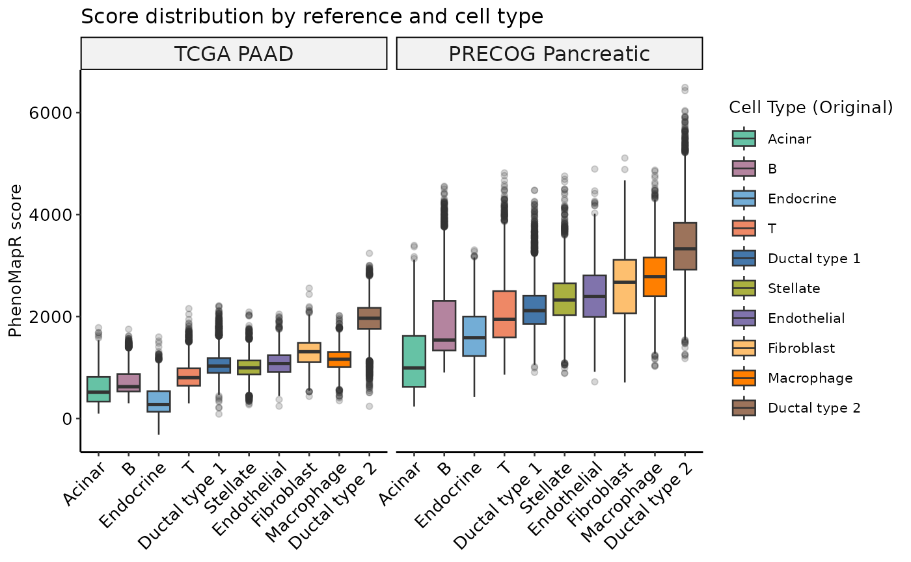
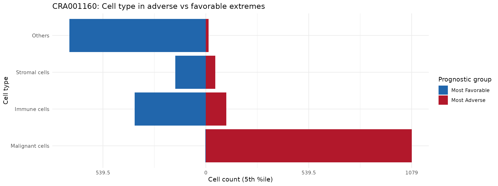
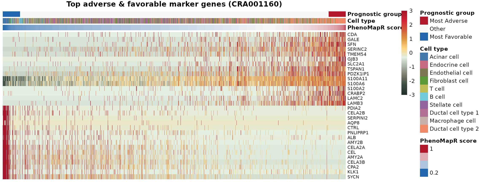
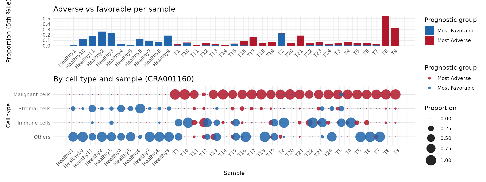

Overview
This vignette demonstrates how to use PhenoMapR on a single-cell RNA-seq dataset. We use the CRA001160 PDAC dataset from Peng et al. (Cell Research 2019) (single-cell RNA-seq of 57,530 pancreatic cells from primary PDAC tumors and control pancreases; GSA: CRA001160). Pre-processed expression and metadata were obtained from TISCH2. We score the expression matrix with TCGA and PRECOG meta-z signatures (no Seurat required), then use the metadata and score outputs for visualizations, prognostic groups, and marker genes. Results are compared with Jolasun et al. SIDISH.
Load data for CRA001160
Download the expression matrix (10X H5) and cell metadata (TSV) from Google Drive. Align metadata to matrix columns and subsample for vignette runtime.
suppressPackageStartupMessages(library(PhenoMapR))
suppressPackageStartupMessages(library(ggplot2))
suppressPackageStartupMessages(library(googledrive))
if (requireNamespace("ggpubr", quietly = TRUE)) suppressPackageStartupMessages(library(ggpubr))
if (requireNamespace("Seurat", quietly = TRUE)) suppressPackageStartupMessages(library(Seurat))
knitr::opts_chunk$set(fig.width = 12, out.width = "100%")
options(googledrive_quiet = TRUE)
googledrive::drive_deauth()
googledrive::drive_download(googledrive::as_id("1PolTXggREz8XmhutCLTQJGCfKxFAzqMl"), "PAAD_CRA001160_expression.h5", overwrite = TRUE)
googledrive::drive_download(googledrive::as_id("17mqxnKOZJn0jW2iD9RV0wZeWsilAIwdu"), "PAAD_CRA001160_CellMetainfo_table.tsv", overwrite = TRUE)
expr_mat <- Seurat::Read10X_h5("PAAD_CRA001160_expression.h5")
meta <- read.delim("PAAD_CRA001160_CellMetainfo_table.tsv", stringsAsFactors = FALSE, check.names = FALSE)
cell_ids <- colnames(expr_mat)
id_col <- NULL
for (cand in c("Barcode", "barcode", "cell_id", "Cell", "cell_barcode", names(meta)[1])) {
if (cand %in% names(meta) && length(intersect(meta[[cand]], cell_ids)) > 0) {
id_col <- cand
break
}
}
if (is.null(id_col)) id_col <- names(meta)[1]
meta <- meta[meta[[id_col]] %in% cell_ids, , drop = FALSE]
meta <- meta[match(cell_ids, meta[[id_col]]), , drop = FALSE]
rownames(meta) <- colnames(expr_mat)
for (col in names(meta)) {
if (!(is.character(meta[[col]]) || is.factor(meta[[col]]))) next
nlev <- length(unique(meta[[col]][!is.na(meta[[col]])]))
if (nlev >= 2L && nlev <= 500L) {
celltype_col <- col
break
}
}
if (!exists("celltype_col")) celltype_col <- names(meta)[2]
celltype_original_col <- if ("Celltype (original)" %in% names(meta)) "Celltype (original)" else NULL
max_cells <- 25000L
if (ncol(expr_mat) > max_cells) {
set.seed(1)
keep_cells <- sample(colnames(expr_mat), max_cells)
expr_mat <- expr_mat[, keep_cells, drop = FALSE]
meta <- meta[keep_cells, , drop = FALSE]
message(sprintf("Subsampled to %d cells for vignette.", ncol(expr_mat)))
}## Subsampled to 25000 cells for vignette.
message(sprintf("Cells: %d | Genes: %d | Cell type: %s", ncol(expr_mat), nrow(expr_mat), celltype_col))## Cells: 25000 | Genes: 21066 | Cell type: Celltype (malignancy)Score cells with TCGA and PRECOG Pancreatic
Score the expression matrix with both references; merge score columns into metadata.
scores_tcga <- PhenoMap(expression = expr_mat, reference = "tcga", cancer_type = "PAAD", verbose = TRUE)## Detected input type: matrix## 4844 genes used for scoring against PAADCalculating scores...
## Completed scoring for PAAD
scores_precog <- PhenoMap(expression = expr_mat, reference = "precog", cancer_type = "Pancreatic", verbose = TRUE)## Detected input type: matrix## 6556 genes used for scoring against PancreaticCalculating scores...
## Completed scoring for Pancreatic
for (col in names(scores_tcga)) meta[[col]] <- scores_tcga[rownames(meta), col]
for (col in names(scores_precog)) meta[[col]] <- scores_precog[rownames(meta), col]
score_tcga_col <- grep("weighted_sum_score.*PAAD", names(meta), value = TRUE, ignore.case = TRUE)[1]
score_precog_col <- grep("weighted_sum_score.*Pancreatic", names(meta), value = TRUE, ignore.case = TRUE)[1]
if (is.na(score_tcga_col)) score_tcga_col <- names(scores_tcga)[1]
if (is.na(score_precog_col)) score_precog_col <- names(scores_precog)[1]Scatterplot: TCGA vs PRECOG scores
Comparison of per-cell scores; points colored by cell type with regression line, 95% CI, and correlation by group.
df_scatter <- data.frame(
x = meta[[score_precog_col]],
y = meta[[score_tcga_col]],
Cell_type = factor(meta[[celltype_col]])
)
pal_ct <- PhenoMapR::get_celltype_palette(levels(df_scatter$Cell_type))
if (requireNamespace("ggpubr", quietly = TRUE)) {
p <- ggpubr::ggscatter(df_scatter, x = "x", y = "y", color = "Cell_type", palette = pal_ct,
add = "reg.line", conf.int = TRUE, size = 0.5, alpha = 0.3) +
ggpubr::stat_cor(aes(color = Cell_type), label.x.npc = "left", size = 3.5) +
scale_x_continuous("PRECOG Pancreatic score") +
scale_y_continuous("TCGA PAAD score") +
labs(title = "CRA001160: TCGA vs PRECOG scores by cell type") +
theme_minimal(base_size = 14) +
theme(legend.position = "right", legend.title = element_text(size = 12), legend.text = element_text(size = 10),
axis.title = element_text(size = 14), axis.text = element_text(size = 12))
print(p)
} else {
print(ggplot(df_scatter, aes(x = x, y = y, color = Cell_type)) +
geom_point(alpha = 0.3, size = 0.5) +
geom_smooth(method = "lm", se = TRUE, linewidth = 0.5) +
scale_color_manual(values = pal_ct, name = "Cell type") +
theme_minimal(base_size = 14) +
labs(x = "PRECOG Pancreatic score", y = "TCGA PAAD score", title = "CRA001160: TCGA vs PRECOG scores"))
}
PhenoMap scores are correlated between TCGA and PRECOG across cell types.
Score distribution: TCGA and PRECOG by cell type (ordered by PRECOG)
Boxplots of score distributions for both references, with cell types ordered by median PRECOG score so that the most adverse (high PRECOG) cell types appear toward one side.
med_precog <- setNames(
tapply(meta[[score_precog_col]], meta[[celltype_col]], median, na.rm = TRUE),
levels(factor(meta[[celltype_col]]))
)
med_precog <- med_precog[!is.na(med_precog)]
ct_order <- names(sort(med_precog))
meta[[celltype_col]] <- factor(meta[[celltype_col]], levels = ct_order)
dl <- rbind(
data.frame(Reference = "TCGA PAAD", Score = meta[[score_tcga_col]], Cell_type = meta[[celltype_col]], stringsAsFactors = FALSE),
data.frame(Reference = "PRECOG Pancreatic", Score = meta[[score_precog_col]], Cell_type = meta[[celltype_col]], stringsAsFactors = FALSE)
)
dl$Reference <- factor(dl$Reference, levels = c("TCGA PAAD", "PRECOG Pancreatic"))
pal_ct <- PhenoMapR::get_celltype_palette(ct_order)
ggplot(dl, aes(x = Cell_type, y = Score, fill = Cell_type)) +
geom_boxplot(outlier.alpha = 0.2) +
facet_wrap(~ Reference, ncol = 2, scales = "free_y") +
scale_fill_manual(values = pal_ct, name = "Cell type") +
theme_minimal() +
theme(axis.text.x = element_text(angle = 45, hjust = 1), legend.position = "right", strip.text = element_text(size = 12)) +
labs(x = "Cell type (ordered by PRECOG median)", y = "PhenoMapR score", title = "CRA001160: Score distribution by reference and cell type")
PhenoMapR successfully identifies the Malignant cell compartment as the most associated with the adverse prognostic signature in both TCGA and PRECOG.
Score distribution by refined cell type
To see if the PhenoMapR score assignment is enriched in more granular cell types, we use the original cell type labels provided by the authors (Peng et al. 2019).
if (!is.null(celltype_original_col) && celltype_original_col %in% names(meta)) {
med_precog_orig <- setNames(
tapply(meta[[score_precog_col]], meta[[celltype_original_col]], median, na.rm = TRUE),
levels(factor(meta[[celltype_original_col]]))
)
med_precog_orig <- med_precog_orig[!is.na(med_precog_orig)]
ct_order_orig <- names(sort(med_precog_orig))
meta$celltype_original <- factor(meta[[celltype_original_col]], levels = ct_order_orig)
dl_orig <- rbind(
data.frame(Reference = "TCGA PAAD", Score = meta[[score_tcga_col]], Cell_type = meta$celltype_original, stringsAsFactors = FALSE),
data.frame(Reference = "PRECOG Pancreatic", Score = meta[[score_precog_col]], Cell_type = meta$celltype_original, stringsAsFactors = FALSE)
)
dl_orig$Reference <- factor(dl_orig$Reference, levels = c("TCGA PAAD", "PRECOG Pancreatic"))
pal_ct_orig <- PhenoMapR::get_celltype_palette(ct_order_orig)
print(ggplot(dl_orig, aes(x = Cell_type, y = Score, fill = Cell_type)) +
geom_boxplot(outlier.alpha = 0.2) +
facet_wrap(~ Reference, ncol = 2, scales = "free_y") +
scale_fill_manual(values = pal_ct_orig, name = "Celltype (original)") +
theme_minimal() +
theme(axis.text.x = element_text(angle = 45, hjust = 1), legend.position = "right", strip.text = element_text(size = 12)) +
labs(x = "Celltype (original)", y = "PhenoMapR score", title = "CRA001160: Score by reference and Celltype (original)"))
} else {
message("Celltype (original) not in metadata; skipping boxplots by original annotations.")
}
In both TCGA and PRECOG results, we see that the Ductal cell type 2 is the most significantly associated cell type with an adverse prognostic signature in PAAD. This agrees with the results from SIDISH Jolasun et al., where they find over 55% of their high-risk cells were Ductal cell type 2.
Cell type representation in the most phenotypically associated populations
Cell type counts in the top 5% (Most Adverse) and bottom 5% (Most Favorable) of cells by PRECOG score.
q_lo <- quantile(meta[[score_precog_col]], 0.05, na.rm = TRUE)
q_hi <- quantile(meta[[score_precog_col]], 0.95, na.rm = TRUE)
pg_tmp <- ifelse(meta[[score_precog_col]] >= q_hi, "Most Adverse", ifelse(meta[[score_precog_col]] <= q_lo, "Most Favorable", NA))
idx_extreme <- !is.na(pg_tmp)
ct_in_extreme <- meta[idx_extreme, ]
ct_in_extreme$pg <- pg_tmp[idx_extreme]
ct_counts <- as.data.frame(table(Cell_type = ct_in_extreme[[celltype_col]], pg = ct_in_extreme$pg))
ct_wide <- reshape(ct_counts, idvar = "Cell_type", timevar = "pg", direction = "wide")
names(ct_wide) <- gsub("Freq\\.", "", names(ct_wide))
for (c in c("Most Adverse", "Most Favorable")) {
if (!c %in% names(ct_wide)) ct_wide[[c]] <- 0
}
ct_wide$Cell_type <- factor(ct_wide$Cell_type, levels = ct_wide$Cell_type[order(ct_wide$`Most Adverse`, decreasing = TRUE)])
ct_long <- rbind(
data.frame(Cell_type = ct_wide$Cell_type, pg = "Most Favorable", n = -ct_wide$`Most Favorable`),
data.frame(Cell_type = ct_wide$Cell_type, pg = "Most Adverse", n = ct_wide$`Most Adverse`)
)
ct_long$pg <- factor(ct_long$pg, levels = c("Most Favorable", "Most Adverse"))
max_n <- max(abs(ct_long$n), 1)
ggplot(ct_long, aes(x = Cell_type, y = n, fill = pg)) +
geom_col() +
coord_flip() +
scale_fill_manual(values = c(`Most Adverse` = "#B2182B", `Most Favorable` = "#2166AC"), name = "Prognostic group") +
scale_y_continuous(breaks = seq(-max_n, max_n, length.out = 5), labels = abs(seq(-max_n, max_n, length.out = 5))) +
theme_minimal() +
theme(axis.text.y = element_text(size = 9), legend.position = "right") +
labs(x = "Cell type", y = "Cell count (5th %ile)", title = "CRA001160: Cell type in adverse vs favorable extremes")
Prognostic groups and marker genes
We define the “Most Adverse” and “Most Favorable” cells from the PRECOG score (5th/95th percentiles), then run marker identification (adverse vs rest, favorable vs rest) using the original cell type annotation for context.
scores_df <- meta[, c(score_tcga_col, score_precog_col), drop = FALSE]
groups <- define_prognostic_groups(scores_df, percentile = 0.05, score_columns = score_precog_col)
group_col <- grep("prognostic_group", names(groups), value = TRUE)[1]
meta[[group_col]] <- groups[rownames(meta), group_col]
markers <- NULL
if (!is.na(group_col)) {
markers <- find_prognostic_markers(expr_mat, group_labels = meta[[group_col]], max_cells_per_ident = 5000L)
if (!is.null(markers)) {
message("Adverse markers (top 5):"); print(head(markers$adverse_markers, 5))
message("Favorable markers (top 5):"); print(head(markers$favorable_markers, 5))
}
}## Using matrix-based marker detection (no Seurat): Most Adverse n=1250, Most Favorable n=1250## Subsampled Other from 22500 to 5000 cells (memory limit)## Warning in asMethod(object): sparse->dense coercion: allocating vector of size
## 1.2 GiB## Adverse markers (top 5):## gene avg_log2FC pct_in_group pct_rest p_val p_adj
## 244 CDA 0.6978046 55.76 8.320 0 0
## 284 GALE 0.6063040 68.32 13.632 0 0
## 334 SFN 1.1479165 77.04 13.904 0 0
## 392 SERINC2 0.9355042 80.32 22.608 0 0
## 425 TMEM54 0.8245556 72.32 17.920 0 0## Favorable markers (top 5):## gene avg_log2FC pct_in_group pct_rest p_val p_adj
## 22163 S100A11 -2.495032 60.24 96.096 0 0
## 22174 S100A6 -2.864895 71.60 97.472 0 0
## 23285 TMSB10 -1.930078 97.28 99.936 0 0
## 27479 RAC1 -1.686747 54.00 92.976 0 0
## 31246 NEAT1 -2.007018 70.72 96.432 0 0Marker heatmap
Top adverse and favorable marker genes; columns ordered by PhenoMapR score. Annotations: PhenoMapR score (blue < 0, red > 0), cell type, sample type (healthy/tumor), prognostic group.
if (is.null(markers)) {
message("Markers not available; skipping heatmap.")
} else {
n_top <- 15
adverse_pos <- markers$adverse_markers[markers$adverse_markers$avg_log2FC > 0, ]
favorable_pos <- markers$favorable_markers[markers$favorable_markers$avg_log2FC > 0, ]
top_genes <- unique(c(
head(adverse_pos$gene[order(adverse_pos$p_adj)], n_top),
head(favorable_pos$gene[order(favorable_pos$p_adj)], n_top)
))
top_genes <- top_genes[top_genes %in% rownames(expr_mat)]
if (length(top_genes) == 0) top_genes <- head(rownames(expr_mat), 20)
mat <- as.matrix(expr_mat[top_genes, , drop = FALSE])
mat_scaled <- t(scale(t(mat)))
mat_scaled[mat_scaled < -3] <- -3
mat_scaled[mat_scaled > 3] <- 3
ord <- order(meta[[score_precog_col]])
mat_scaled <- mat_scaled[, ord, drop = FALSE]
meta_ord <- meta[ord, ]
score_vals <- meta_ord[[score_precog_col]]
lim <- max(abs(range(score_vals, na.rm = TRUE)), 0.01)
score_norm <- score_vals / lim
ct_anno_col <- if (!is.null(celltype_original_col) && celltype_original_col %in% names(meta_ord)) celltype_original_col else celltype_col
sample_type_col <- NULL
for (cand in c("Sample type", "Tissue", "Type", "Cancer", "Condition")) {
if (cand %in% names(meta_ord) && is.character(meta_ord[[cand]])) {
u <- unique(tolower(meta_ord[[cand]]))
if (any(grepl("normal|healthy|control", u)) && any(grepl("tumor|tumour|cancer|pdac", u))) {
sample_type_col <- cand
break
}
}
}
if (is.null(sample_type_col) && "Sample type" %in% names(meta_ord)) sample_type_col <- "Sample type"
ann_col <- data.frame(
`PhenoMapR score` = score_norm,
`Cell type` = factor(meta_ord[[ct_anno_col]]),
`Prognostic group` = factor(meta_ord[[group_col]], levels = c("Most Adverse", "Other", "Most Favorable")),
check.names = FALSE
)
if (!is.null(sample_type_col)) ann_col$`Sample type` <- factor(meta_ord[[sample_type_col]])
rownames(ann_col) <- colnames(mat_scaled)
pal_score <- colorRampPalette(c("#2166AC", "#F7F7F7", "#B2182B"))(100)
pal_group <- c(`Most Adverse` = "#B2182B", Other = "#F7F7F7", `Most Favorable` = "#2166AC")
pal_celltype <- PhenoMapR::get_celltype_palette(as.character(ann_col$`Cell type`))
ann_colors <- list(
`PhenoMapR score` = pal_score,
`Cell type` = pal_celltype,
`Prognostic group` = pal_group
)
if (!is.null(sample_type_col)) {
st_lev <- levels(ann_col$`Sample type`)
ann_colors$`Sample type` <- setNames(PhenoMapR::get_celltype_palette(st_lev), st_lev)
}
heatmap_colors <- if (requireNamespace("paletteer", quietly = TRUE)) {
colorRampPalette(paletteer::paletteer_d("MexBrewer::Vendedora"))(100)
} else {
colorRampPalette(c("#2166AC", "#F7F7F7", "#B2182B"))(100)
}
if (requireNamespace("pheatmap", quietly = TRUE)) {
pheatmap::pheatmap(
mat_scaled,
scale = "none",
cluster_cols = FALSE,
cluster_rows = FALSE,
show_colnames = FALSE,
annotation_col = ann_col,
annotation_colors = ann_colors,
color = heatmap_colors,
breaks = seq(-3, 3, length.out = 101),
main = "Top adverse & favorable marker genes (CRA001160)",
fontsize_row = 8
)
} else {
heatmap(mat_scaled, scale = "none", Colv = NA, col = heatmap_colors, labCol = FALSE, main = "Top marker genes (CRA001160)")
}
}
PhenoMapR score is normalized to [-1, 1] so the bar is blue for negative, white at 0, and red for positive.
Proportion of prognostic cells by sample and cell type
Stacked bar (top): proportion of Most Adverse and Most Favorable cells (5th percentile) per sample. Below: proportion within each sample and cell type.
sample_col <- NULL
for (cand in c("Sample", "sample", "Patient", "patient", "Sample_ID", "orig.ident")) {
if (cand %in% names(meta)) {
sample_col <- cand
break
}
}
if (is.null(sample_col)) sample_col <- names(meta)[1]
meta_plot <- meta
meta_plot$sample <- meta_plot[[sample_col]]
meta_plot$cell_type <- meta_plot[[celltype_col]]
meta_plot$prognostic_grp <- meta_plot[[group_col]]
sample_lev <- levels(factor(meta[[sample_col]]))
meta_plot$sample <- factor(meta_plot[[sample_col]], levels = sample_lev)
n_per_sample <- setNames(as.numeric(table(meta[[sample_col]])[sample_lev]), sample_lev)
n_per_sample[is.na(n_per_sample)] <- 0
# Per-sample proportion of adverse and favorable (5th percentile) for stacked bar
meta_adv_fav <- meta_plot[meta_plot$prognostic_grp %in% c("Most Adverse", "Most Favorable"), ]
bar_df <- as.data.frame(table(sample = meta_adv_fav$sample, pg = meta_adv_fav$prognostic_grp, useNA = "no"))
bar_df <- bar_df[bar_df$pg %in% c("Most Adverse", "Most Favorable"), ]
bar_df$total <- n_per_sample[as.character(bar_df$sample)]
bar_df$proportion <- ifelse(bar_df$total > 0, bar_df$Freq / bar_df$total, 0)
fav <- bar_df[bar_df$pg == "Most Favorable", c("sample", "proportion")]
adv <- bar_df[bar_df$pg == "Most Adverse", c("sample", "proportion")]
names(fav)[2] <- "p_fav"
names(adv)[2] <- "p_adv"
bar_stack <- merge(data.frame(sample = sample_lev, stringsAsFactors = FALSE), fav, by = "sample", all.x = TRUE)
bar_stack <- merge(bar_stack, adv, by = "sample", all.x = TRUE)
bar_stack$p_fav[is.na(bar_stack$p_fav)] <- 0
bar_stack$p_adv[is.na(bar_stack$p_adv)] <- 0
bar_stack$sample <- factor(bar_stack$sample, levels = sample_lev)
meta_plot <- meta_plot[meta_plot$prognostic_grp %in% c("Most Adverse", "Most Favorable"), ]
meta_plot$cell_type <- factor(meta_plot$cell_type)
if (nrow(meta_plot) > 0) {
counts <- as.data.frame(table(meta_plot$sample, meta_plot$cell_type, meta_plot$prognostic_grp, dnn = c("sample", "cell_type", "pg")))
totals <- aggregate(counts$Freq, by = list(sample = counts$sample, pg = counts$pg), FUN = sum)
names(totals)[3] <- "total"
counts <- merge(counts, totals, by = c("sample", "pg"))
counts$proportion <- counts$Freq / counts$total
counts$proportion[counts$total == 0] <- 0
counts$x_num <- as.numeric(counts$sample) + ifelse(counts$pg == "Most Adverse", -0.18, 0.18)
# Stacked bar: adverse + favorable proportion per sample
bar_long <- rbind(
data.frame(sample = bar_stack$sample, pg = "Most Favorable", y_min = 0, y_max = bar_stack$p_fav),
data.frame(sample = bar_stack$sample, pg = "Most Adverse", y_min = bar_stack$p_fav, y_max = bar_stack$p_fav + bar_stack$p_adv)
)
bar_long$pg <- factor(bar_long$pg, levels = c("Most Favorable", "Most Adverse"))
p_bar <- ggplot(bar_long, aes(x = as.numeric(sample), fill = pg)) +
geom_rect(aes(xmin = as.numeric(sample) - 0.4, xmax = as.numeric(sample) + 0.4, ymin = y_min, ymax = y_max)) +
scale_fill_manual(values = c(`Most Adverse` = "#B2182B", `Most Favorable` = "#2166AC"), name = "Prognostic group") +
scale_x_continuous(breaks = seq_along(sample_lev), labels = sample_lev) +
scale_y_continuous(expand = c(0, 0)) +
theme_minimal() +
theme(axis.text.x = element_text(angle = 45, hjust = 1), axis.title.x = element_blank(), legend.position = "right") +
labs(y = "Proportion (5th %ile)", title = "Adverse vs favorable per sample")
p_dots <- ggplot(counts, aes(x = x_num, y = cell_type, size = proportion, color = pg)) +
geom_point(alpha = 0.85) +
scale_color_manual(values = c(`Most Adverse` = "#B2182B", `Most Favorable` = "#2166AC"), name = "Prognostic group") +
scale_size_continuous(range = c(0, 8), name = "Proportion") +
scale_x_continuous(breaks = seq_along(sample_lev), labels = sample_lev) +
theme_minimal() +
theme(panel.grid.major.y = element_line(color = "grey90"), axis.title = element_text(size = 10), axis.text.x = element_text(angle = 45, hjust = 1), legend.position = "right") +
labs(x = "Sample", y = "Cell type", title = "By cell type and sample (CRA001160)")
if (requireNamespace("patchwork", quietly = TRUE)) {
suppressPackageStartupMessages(library(patchwork))
print(p_bar / p_dots + plot_layout(heights = c(1, 2)))
} else {
print(p_bar)
print(p_dots)
}
} else {
message("No Most Adverse or Most Favorable cells found; proportion plot skipped.")
}
Conclusions
Here, we demonstrate that using PhenoMapR on single-cell RNAseq data in a pancreatic cancer dataset successfully identified cells known to be associated with disease (malignant and ductal type 1). These results agree with those of Jolasun et al., however our PhenoMapR results provide an increased level of granularity compared to other methods, since we retain absolute and rank-ordered information regarding all cell’s phenotype association. We also nominate those most associated with favorable outcomes in PAAD, highlighting potential areas for additional therapeutic focus.
References
CRA001160 (single-cell PDAC dataset): Peng J, Sun B-F, Chen C-Y, Zhou J-Y, Chen Y-S, et al. Single-cell RNA-seq highlights intra-tumoral heterogeneity and malignant progression in pancreatic ductal adenocarcinoma. Cell Research 29, 725–738 (2019). https://doi.org/10.1038/s41422-019-0195-y. Data: GSA: CRA001160.
PRECOG 2.0: Benard B, Lalgudi S, et al. PRECOG 2.0: an updated resource of pan-cancer gene-level prognostic meta-z scores. Nucleic Acids Research. 2026.
Session Info
## R version 4.5.3 (2026-03-11)
## Platform: x86_64-pc-linux-gnu
## Running under: Ubuntu 24.04.3 LTS
##
## Matrix products: default
## BLAS: /usr/lib/x86_64-linux-gnu/openblas-pthread/libblas.so.3
## LAPACK: /usr/lib/x86_64-linux-gnu/openblas-pthread/libopenblasp-r0.3.26.so; LAPACK version 3.12.0
##
## locale:
## [1] LC_CTYPE=C.UTF-8 LC_NUMERIC=C LC_TIME=C.UTF-8
## [4] LC_COLLATE=C.UTF-8 LC_MONETARY=C.UTF-8 LC_MESSAGES=C.UTF-8
## [7] LC_PAPER=C.UTF-8 LC_NAME=C LC_ADDRESS=C
## [10] LC_TELEPHONE=C LC_MEASUREMENT=C.UTF-8 LC_IDENTIFICATION=C
##
## time zone: UTC
## tzcode source: system (glibc)
##
## attached base packages:
## [1] stats graphics grDevices utils datasets methods base
##
## other attached packages:
## [1] patchwork_1.3.2 Seurat_5.4.0 SeuratObject_5.3.0 sp_2.2-1
## [5] ggpubr_0.6.3 googledrive_2.1.2 ggplot2_4.0.2 PhenoMapR_0.1.0
##
## loaded via a namespace (and not attached):
## [1] RColorBrewer_1.1-3 jsonlite_2.0.0 magrittr_2.0.4
## [4] spatstat.utils_3.2-2 farver_2.1.2 rmarkdown_2.30
## [7] fs_1.6.7 ragg_1.5.1 vctrs_0.7.1
## [10] ROCR_1.0-12 spatstat.explore_3.7-0 paletteer_1.7.0
## [13] rstatix_0.7.3 htmltools_0.5.9 curl_7.0.0
## [16] broom_1.0.12 Formula_1.2-5 sass_0.4.10
## [19] sctransform_0.4.3 parallelly_1.46.1 KernSmooth_2.23-26
## [22] bslib_0.10.0 htmlwidgets_1.6.4 desc_1.4.3
## [25] ica_1.0-3 plyr_1.8.9 plotly_4.12.0
## [28] zoo_1.8-15 cachem_1.1.0 igraph_2.2.2
## [31] mime_0.13 lifecycle_1.0.5 pkgconfig_2.0.3
## [34] Matrix_1.7-4 R6_2.6.1 fastmap_1.2.0
## [37] fitdistrplus_1.2-6 future_1.69.0 shiny_1.13.0
## [40] digest_0.6.39 rematch2_2.1.2 tensor_1.5.1
## [43] prismatic_1.1.2 RSpectra_0.16-2 irlba_2.3.7
## [46] textshaping_1.0.5 labeling_0.4.3 progressr_0.18.0
## [49] spatstat.sparse_3.1-0 mgcv_1.9-4 httr_1.4.8
## [52] polyclip_1.10-7 abind_1.4-8 compiler_4.5.3
## [55] gargle_1.6.1 bit64_4.6.0-1 withr_3.0.2
## [58] S7_0.2.1 backports_1.5.0 carData_3.0-6
## [61] fastDummies_1.7.5 ggsignif_0.6.4 MASS_7.3-65
## [64] tools_4.5.3 lmtest_0.9-40 otel_0.2.0
## [67] httpuv_1.6.16 future.apply_1.20.2 goftest_1.2-3
## [70] glue_1.8.0 nlme_3.1-168 promises_1.5.0
## [73] grid_4.5.3 Rtsne_0.17 cluster_2.1.8.2
## [76] reshape2_1.4.5 generics_0.1.4 hdf5r_1.3.12
## [79] gtable_0.3.6 spatstat.data_3.1-9 tidyr_1.3.2
## [82] data.table_1.18.2.1 car_3.1-5 spatstat.geom_3.7-0
## [85] RcppAnnoy_0.0.23 ggrepel_0.9.7 RANN_2.6.2
## [88] pillar_1.11.1 stringr_1.6.0 spam_2.11-3
## [91] RcppHNSW_0.6.0 later_1.4.8 splines_4.5.3
## [94] dplyr_1.2.0 lattice_0.22-9 bit_4.6.0
## [97] survival_3.8-6 deldir_2.0-4 tidyselect_1.2.1
## [100] miniUI_0.1.2 pbapply_1.7-4 knitr_1.51
## [103] gridExtra_2.3 scattermore_1.2 xfun_0.56
## [106] matrixStats_1.5.0 pheatmap_1.0.13 stringi_1.8.7
## [109] lazyeval_0.2.2 yaml_2.3.12 evaluate_1.0.5
## [112] codetools_0.2-20 tibble_3.3.1 cli_3.6.5
## [115] uwot_0.2.4 xtable_1.8-8 reticulate_1.45.0
## [118] systemfonts_1.3.2 jquerylib_0.1.4 Rcpp_1.1.1
## [121] spatstat.random_3.4-4 globals_0.19.1 png_0.1-8
## [124] spatstat.univar_3.1-6 parallel_4.5.3 pkgdown_2.2.0
## [127] presto_1.0.0 dotCall64_1.2 listenv_0.10.1
## [130] viridisLite_0.4.3 scales_1.4.0 ggridges_0.5.7
## [133] purrr_1.2.1 rlang_1.1.7 cowplot_1.2.0